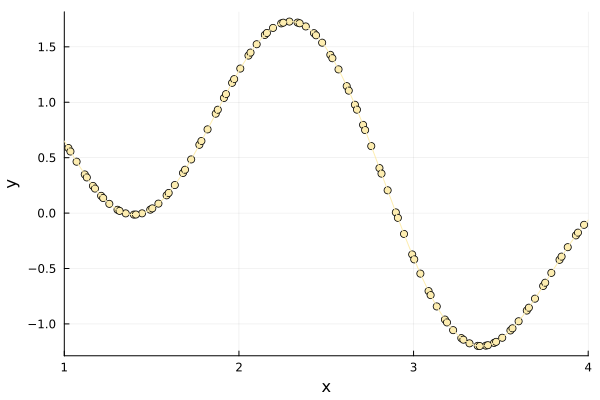
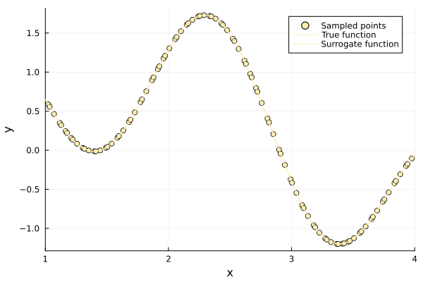
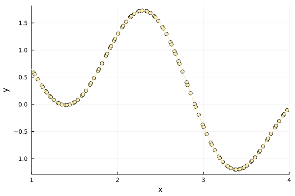
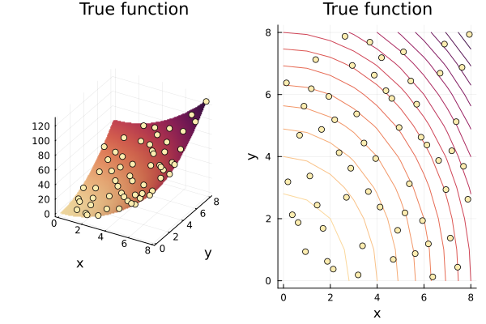
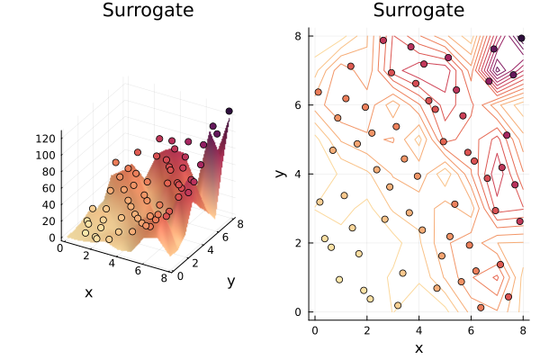
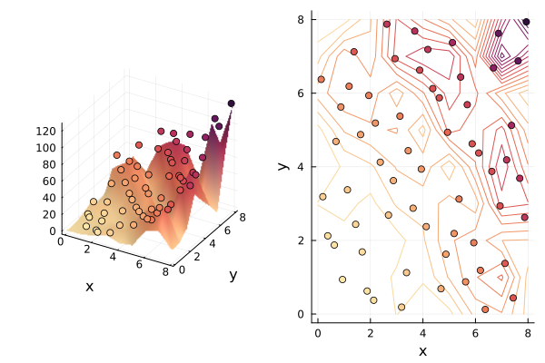

Lobachevsky Surrogate Tutorial
Lobachevsky splines function is a function that is used for univariate and multivariate scattered interpolation. Introduced by Lobachevsky in 1842 to investigate errors in astronomical measurements.
The surrogate has two hyperparameters. alpha is the kernel scale and must lie in (0, 4], one value per input dimension in the multivariate case; a scale of zero would make every kernel value identical and the interpolation system singular. n is the kernel order and must be even, positive and at most 20, since the kernel evaluates factorial(n).
Unlike the other surrogates here, a Lobachevsky spline has a closed-form integral, and one coordinate can be integrated out to leave a surrogate on the remaining ones.
Surrogates.lobachevsky_integrate_dimension — Function
lobachevsky_integrate_dimension(loba::LobachevskySurrogate, lb, ub, dim)Integrate the surrogate over dimension dim on [lb[dim], ub[dim]], returning a surrogate on the remaining d - 1 coordinates that evaluates to the marginal of loba.
Neither loba nor the lb and ub passed in are mutated. The returned surrogate carries the marginal values at the reduced nodes as its y, so it is self-consistent: refitting it reproduces its coefficients.
We are going to use a Lobachevsky surrogate to optimize $f(x)=sin(x)+sin(10/3 * x)$.
First of all import Surrogates and Plots.
using Surrogates
using PlotsSampling
We choose to sample f in 100 points between 0 and 4 using the sample function. The sampling points are chosen using a Sobol sequence, this can be done by passing SobolSample() to the sample function.
f(x) = sin(x) + sin(10 / 3 * x)
n_samples = 100
lower_bound = 1.0
upper_bound = 4.0
x = sample(n_samples, lower_bound, upper_bound, SobolSample())
y = f.(x)
scatter(x, y, label = "Sampled points", xlims = (lower_bound, upper_bound))
plot!(f, label = "True function", xlims = (lower_bound, upper_bound))
Building a surrogate
With our sampled points, we can build the Lobachevsky surrogate using the LobachevskySurrogate function.
lobachevsky_surrogate behaves like an ordinary function, which we can simply plot. alpha sets the kernel scale and n its order; a larger n makes the kernel approach a Gaussian radial basis function.
alpha = 2.0
n = 6
lobachevsky_surrogate = LobachevskySurrogate(
x, y, lower_bound, upper_bound, alpha = 2.0, n = 6)
plot(x, y, seriestype = :scatter, label = "Sampled points",
xlims = (lower_bound, upper_bound), legend = true)
plot!(f, label = "True function", xlims = (lower_bound, upper_bound))
plot!(
lobachevsky_surrogate, label = "Surrogate function", xlims = (lower_bound, upper_bound))
Optimizing
Having built a surrogate, we can now use it to search for minima in our original function f.
To optimize using our surrogate we call surrogate_optimize! method. We choose to use Stochastic RBF as the optimization technique and again Sobol sampling as the sampling technique.
surrogate_optimize!(
f, SRBF(), lower_bound, upper_bound, lobachevsky_surrogate, SobolSample())
scatter(x, y, label = "Sampled points")
plot!(f, label = "True function", xlims = (lower_bound, upper_bound))
plot!(
lobachevsky_surrogate, label = "Surrogate function", xlims = (lower_bound, upper_bound))
The closed-form integral
The Lobachevsky spline integrates in closed form, which the other surrogates in this package do not. lobachevsky_integral evaluates that formula, and it agrees with numerical integration of the same surrogate to round-off:
using QuadGK
closed = lobachevsky_integral(lobachevsky_surrogate, lower_bound, upper_bound)
numerical = quadgk(lobachevsky_surrogate, lower_bound, upper_bound)[1]
truth = quadgk(f, lower_bound, upper_bound)[1]
println("closed form = ", closed)
println("quadrature of surrogate= ", numerical)
println("quadrature of f = ", truth)
println("relative difference = ", abs(closed - numerical) / abs(numerical))closed form = 0.6834382555786078
quadrature of surrogate= 0.6834382555857824
quadrature of f = 0.683437211321203
relative difference = 1.0497794341181158e-11In the example below, it shows how to use lobachevsky_surrogate for higher dimension problems.
Lobachevsky Surrogate Tutorial (ND):
First of all, we will define the Schaffer function we are going to build surrogate for. Notice, one how its argument is a vector of numbers, one for each coordinate, and its output is a scalar.
using Plots
default(c = :matter, legend = false, xlabel = "x", ylabel = "y")
using Surrogates
function schaffer(x)
x1 = x[1]
x2 = x[2]
fact1 = x1^2
fact2 = x2^2
y = fact1 + fact2
endschaffer (generic function with 1 method)Sampling
Let's define our bounds, this time we are working in two dimensions. In particular, we want our first dimension x to have bounds 0, 8, and 0, 8 for the second dimension. We are taking 60 samples of the space using Sobol Sequences. We then evaluate our function on all of the sampling points.
n_samples = 60
lower_bound = [0.0, 0.0]
upper_bound = [8.0, 8.0]
xys = sample(n_samples, lower_bound, upper_bound, SobolSample())
zs = schaffer.(xys);60-element Vector{Float64}:
4.65625
56.65625
40.65625
22.65625
12.65625
80.65625
38.65625
52.65625
3.90625
55.90625
⋮
56.7578125
31.0078125
126.0078125
39.0078125
39.0078125
8.0078125
71.0078125
55.5078125
31.5078125x, y = 0:8, 0:8
p1 = surface(x, y, (x1, x2) -> schaffer((x1, x2)))
xs = [xy[1] for xy in xys]
ys = [xy[2] for xy in xys]
scatter!(xs, ys, zs)
p2 = contour(x, y, (x1, x2) -> schaffer((x1, x2)))
scatter!(xs, ys)
plot(p1, p2, title = "True function")
Building a surrogate
Using the sampled points, we build the surrogate, the steps are analogous to the 1-dimensional case.
Lobachevsky = LobachevskySurrogate(
xys, zs, lower_bound, upper_bound, alpha = [2.4, 2.4], n = 8)(::LobachevskySurrogate{Vector{Tuple{Float64, Float64}}, Vector{Float64}, Vector{Float64}, Int64, Vector{Float64}, Vector{Float64}, Vector{Float64}, Bool}) (generic function with 2 methods)p1 = surface(x, y, (x, y) -> Lobachevsky([x y]))
scatter!(xs, ys, zs, marker_z = zs)
p2 = contour(x, y, (x, y) -> Lobachevsky([x y]))
scatter!(xs, ys, marker_z = zs)
plot(p1, p2, title = "Surrogate")
Optimizing
With our surrogate, we can now search for the minima of the function.
The points sampled during the optimization process are added to the surrogate. The xys array we built it from is left untouched, so it is the surrogate's own sample list whose size changes.
length(xys), length(Lobachevsky.x)(60, 60)surrogate_optimize!(schaffer, SRBF(), lower_bound, upper_bound, Lobachevsky,
SobolSample(), maxiters = 1, num_new_samples = 10)((0.9375, 0.9375), 1.7578125)length(xys), length(Lobachevsky.x)(60, 60)p1 = surface(x, y, (x, y) -> Lobachevsky([x y]))
xys = Lobachevsky.x
xs = [i[1] for i in xys]
ys = [i[2] for i in xys]
zs = schaffer.(xys)
scatter!(xs, ys, zs, marker_z = zs)
p2 = contour(x, y, (x, y) -> Lobachevsky([x y]))
scatter!(xs, ys, marker_z = zs)
plot(p1, p2)
Integrating out a coordinate
lobachevsky_integrate_dimension integrates the surrogate over one coordinate and returns a surrogate on the remaining ones — the marginal. Here we integrate the second coordinate of the two-dimensional model over [0, 8], leaving a one-dimensional surrogate in x1:
using QuadGK
marginal = lobachevsky_integrate_dimension(
Lobachevsky, lower_bound, upper_bound, 2)
for x1 in [1.0, 3.0, 6.0]
direct = quadgk(t -> Lobachevsky((x1, t)), lower_bound[2], upper_bound[2])[1]
println("x1 = ", x1, " marginal = ", marginal(x1), " quadrature = ", direct)
endx1 = 1.0 marginal = 130.57675509787586 quadrature = 130.5767550997336
x1 = 3.0 marginal = 203.3733151914547 quadrature = 203.37331517064024
x1 = 6.0 marginal = 284.9099880232084 quadrature = 284.90998794088216Integrating that marginal over the remaining coordinate gives the same answer as integrating the two-dimensional surrogate over the whole box:
lobachevsky_integral(marginal, marginal.lb, marginal.ub),
lobachevsky_integral(Lobachevsky, lower_bound, upper_bound)(1976.4004645802036, 1976.4004645802036)Vector-valued responses
The interpolant is linear in the responses and the kernel matrix does not involve them, so several outputs can be fitted at once against the same matrix. Pass a vector of equal-length response vectors and the surrogate returns a vector:
using Surrogates
f = x -> [sin(x), cos(x), 2x]
x = sample(20, 0.0, 4.0, SobolSample())
y = f.(x)
multi = LobachevskySurrogate(x, y, 0.0, 4.0, alpha = 2.0, n = 6)
multi(1.3)3-element Vector{Float64}:
0.9636618357959463
0.2674527737676611
2.5997336510399833Each output is the surrogate that would have been fitted to that output alone, so lobachevsky_integral and lobachevsky_integrate_dimension return one value per output as well:
lobachevsky_integral(multi, 0.0, 4.0)3-element Vector{Float64}:
1.6544788766426635
-0.7571590001710131
15.995950070846462